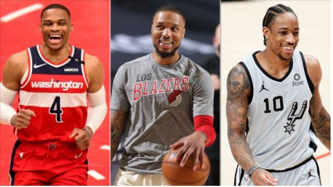

16/09/21 NBA
¿Quiénes son los mejores anotadores en el clutch en las últimas 5 temporadas? Datos y curiosidades
Después de repasar los datos colectivos, toca meternos en lo que arrojan los datos individuales en las instancias decisivas de los partidos. ¿Qué jugador anotó más puntos en estos momentos? Los detalles de un Top 10 con varias sorpresas.
Ver lo que pasa en los minutos clutch de un partido NBA es una de las cuestiones más interesantes alrededor de los múltiples ángulos de análisis que hay. Claro, hablamos de los últimos 5 minutos de un encuentro que tiene una diferencia de 5 o menos puntos. Es decir, el tramo decisivo de un choque cerrado, ideal para cualquier fan. Hace unos días indagamos en cuestiones colectivas, viendo qué equipos tuvieron mayor o menor éxito en el clutch en las últimas cinco temporadas. Y ahora es el turno de meternos en el plano individual.
Mas | Datos y curiosidades del rendimiento de los equipos NBA en el clutch en los últimos 5 años
¿Quiénes han sido los jugadores más destacados en el clutch en las últimas cinco campañas? Veamos...
Los líderes anotadores en el clutch
| Jugador | Puntos | Jugador | Puntos | Jugador | Puntos |
|---|---|---|---|---|---|
| Russell Westbrook | 747 | LeBron James | 569 | Devin Booker | 475 |
| Damian Lillard | 721 | Kyrie Irving | 567 | Paul George | 460 |
| DeMar DeRozan | 692 | Kemba Walker | 558 | CJ McCollum | 457 |